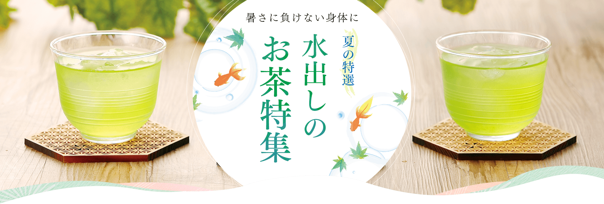

- 1エピガロカテキンで免疫力アップ
- 緑茶に含まれるカテキンは、様々な健康作用がある苦味・渋味成分ですが、水で出すことで「エピガロカテキン」が力を発揮！近年の研究で、白血球を活性化させ免疫機能を高める働きが解明されました。
- 2きわだつ甘味と旨味
- 水で出すと、緑茶の渋味成分が抑えられ、甘味・旨味成分の「テアニン」が際立ちます。いつものお湯で淹れるお茶と比べて、緑茶本来のすっきり爽やかなおいしさが魅力です。
- 3熱中症対策におすすめ
- 緑茶はノンカロリーでビタミン・ミネラルも豊富です。汗とともに失われたビタミン・ミネラルを補い、夏バテ防止に効果的です。水で出すことでカフェインも抑えられ、スポーツの後や就寝前の水分補給にもぴったりです。


水出し煎茶
吟撰水出し煎茶ティーバッグ 1本1,458円
4月下旬頃摘み採りした一番茶の茶葉を、水出しで美味しくいただけるように、細かく刻みました。リーフならではのコクのある味わいを手軽にお楽しみいただけます。
[包材]ナイロンメッシュ/5g×20個
美味しい水出し煎茶ティーバッグ 1本1,080円
選りすぐりの一番茶の茶葉を、水出しで美味しくいただけるように、細かく刻みました。
※「極撰水出し煎茶ティーバッグ」から「美味しい水出し煎茶ティーバッグ」に商品名が変わりました。
[包材]ナイロンメッシュ/5g×20個
葛野農園おすすめの水出し茶
茶葉で水出し茶を楽しむ
他にもいろいろ水出し茶
ハトムギ入り麦茶648円
香ばしい麦の香りと甘みが出るように良質な国産の六条大麦とはと麦をブレンドしました。六条大麦の高い香り、はと麦の深く甘い香り、じっくりと二度焙煎した香ばしく美味しい麦茶です。
冷やしても美味しい健康茶
静岡県産 黒烏龍茶 50個入1,296円
脂っこい食事に健康が気になる方に!
一般的な烏龍茶と比べて発酵期間が長く、充分に熟成させてから高温で焙煎しているため、茶葉や水色が濃い色になります。